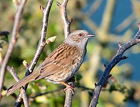
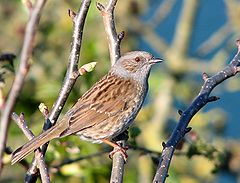

| Dunnock | |
|---|---|
|  | |
| Conservation status | |
| Binomial name | |
| Prunella modularis (Linnaeus, 1758) |
| Dunnock | |
|---|---|
|  | |
| Conservation status | |
| Binomial name | |
| Prunella modularis (Linnaeus, 1758) |
The Dunnock, Prunella modularis, is a small passerine bird found throughout temperate Europe and into Asia. It is by far the most widespread member of the accentor family, which otherwise consists of mountain species. It is sometimes called the Hedge Accentor, Hedge Sparrow or Hedge Warbler.
It is a resident in the milder west and south of its range, but as an insectivore, must migrate south from the colder parts of its range. It is a bird of woodland, shrub and gardens. It builds a neat nest low in a bush or conifer, laying 3-5 unspotted blue eggs.
It is a host of the Common Cuckoo. It is likely that this association is recent, since other Cuckoo hosts have learned to discriminate between eggs, and the Cuckoo has consequently evolved eggs that match those of its host. In the case of the Dunnock, there is no resemblance, yet the Cuckoo eggs are accepted.
This is a Robin-sized bird, 13.5–14 cm in length, fairly drab in appearance, and somewhat resembling a small House Sparrow with its streaked back and general shape. It is also brownish underneath, and has a fine pointed bill. Adults have a grey head. The sexes are similarly coloured. They were introduced to New Zealand between 1867 and 1882 and now breed throughout the country including on the Chatham, Antipodes, Auckland and Campbell islands.[1]
This species makes up for its drab appearance with its breeding behaviour. Females are often polyandrous, breeding with two males at once, and thus giving rise to sperm competition. Males compete for mating access to the female, but DNA fingerprinting has shown that chicks within broods often have different fathers, depending on their success at monopolising access to the fertile female. Males try to ensure their paternity during courtship by pecking at the cloaca of the female to stimulate her to eject the sperm of other males with whom the female has recently mated.[1] Males provide parental care in proportion to their mating success, so it is not uncommon to see two males and a female provisioning nestlings at one nest. Polyandry is rare in birds, with only about 2% of species showing such a mating system; the majority are monogamous, where one male and one female breed together.
The song is thin and tinkling, a sweet warble which can be confused with the Wren. However the Wren's song incorporates repeated trill sounds and the Dunnock's does not. While the bubbling song of a Dunnock is very pleasant, it has been described as being similar to a squeaky trolley wheel.
The main call is a shrill, persistent "tseep", which often betrays its otherwise inconspicuous presence.

{kind=link}